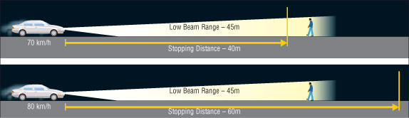
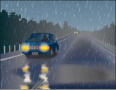

रात में और खराब मौसम में गाड़ी चलाना
रात में और बारिश, बर्फबारी या कोहरे जैसी खराब मौसम स्थितियों में, हेडलाइट चालू होने पर भी आगे का दृश्य स्पष्ट नहीं दिखाई देता। रात में गाड़ी चलाते समय गति धीमी रखें, खासकर अंधेरी सड़कों पर और जब भी मौसम की स्थिति दृश्यता कम कर दे।
अपनी हेडलाइट्स को ओवरड्राइव करना
जब आप इतनी तेज़ गति से गाड़ी चलाते हैं कि रुकने की दूरी आपकी हेडलाइट्स से दिखाई देने वाली दूरी से अधिक हो जाती है, तो आप अपनी हेडलाइट्स का ज़रूरत से ज़्यादा इस्तेमाल कर रहे होते हैं। ऐसा करना खतरनाक है, क्योंकि इससे आपको सुरक्षित रूप से रुकने के लिए पर्याप्त जगह नहीं मिल पाती। परावर्तक सड़क संकेत भी आपको भ्रमित कर सकते हैं, जिससे आपको लग सकता है कि आप वास्तव में जितनी दूर देख सकते हैं, उससे कहीं अधिक दूर देख रहे हैं। यदि आप सावधान नहीं रहते हैं, तो इससे आप अपनी हेडलाइट्स का ज़रूरत से ज़्यादा इस्तेमाल कर सकते हैं (चित्र 2-58)।

आरेख 2-58
चमक
चकाचौंध तेज रोशनी होती है जिससे देखना और आसपास के लोगों की गतिविधियों को समझना मुश्किल हो जाता है। सूर्य की किरणों के कोण और आसपास के वातावरण के आधार पर, यह समस्या धूप वाले और बादल छाए हुए दोनों दिनों में हो सकती है। तेज रोशनी वाली गाड़ियों की आगे की लाइटें या रियर व्यू मिरर में उनका प्रतिबिंब दिखाई देने पर भी चकाचौंध परेशानी का कारण बन सकती है।
रात में तेज़ हेडलाइट वाली गाड़ियों का सामना करते समय, ऊपर और आगे तथा सामने से आ रही गाड़ियों की बत्ती के थोड़ा दाईं ओर देखें। दिन के उजाले में, धूप से बचने के लिए सन विज़र का इस्तेमाल करें या अपनी गाड़ी में अच्छी क्वालिटी के धूप के चश्मे रखें। तेज़ धूप वाले दिन किसी सुरंग में प्रवेश करते समय, गति धीमी कर लें ताकि आपकी आँखें कम रोशनी में अभ्यस्त हो सकें। अपने धूप के चश्मे उतार दें और हेडलाइट चालू कर लें।
रात में चकाचौंध कम करने के लिए वाहन की लाइटों के नियमों का पालन करें। सामने से आ रहे वाहन से 150 मीटर की दूरी के भीतर या 60 मीटर की दूरी के भीतर किसी वाहन का पीछा करते समय अपनी लो-बीम हेडलाइट्स का उपयोग करें। ग्रामीण सड़कों पर, मोड़ या पहाड़ी पर पहुँचने पर लो-बीम चालू कर लें ताकि आप सामने से आ रही हेडलाइट्स देख सकें और सामने से आ रहे ड्राइवरों की आंखों में चकाचौंध न हो। यदि आपको कोई हेडलाइट दिखाई न दे, तो हाई-बीम चालू कर लें।
कोहरा
कोहरा बादलों की एक पतली परत होती है जो जमीन पर फैली रहती है। कोहरे के कारण चालकों की दृश्यता कम हो जाती है, जिससे गाड़ी चलाना मुश्किल हो जाता है।
कोहरे में गाड़ी चलाने से बचना ही सबसे अच्छा उपाय है। मौसम का पूर्वानुमान देखें और अगर कोहरे की चेतावनी हो, तो कोहरा छंटने तक अपनी यात्रा स्थगित कर दें। अगर ऐसा संभव न हो या आप कोहरे में गाड़ी चला रहे हों, तो सुरक्षित ड्राइविंग के कुछ सुझाव हैं जिनका आपको पालन करना चाहिए। अगर दृश्यता तेज़ी से कम हो रही हो, तो सड़क से हटकर किसी सुरक्षित पार्किंग क्षेत्र में गाड़ी खड़ी कर लें और कोहरा छंटने का इंतज़ार करें।
कोहरे में सुरक्षित रूप से गाड़ी चलाने के लिए सुझाव
गाड़ी चलाने से पहले और यात्रा के दौरान मौसम का पूर्वानुमान अवश्य देखें। यदि कोहरे की चेतावनी है, तो कोहरा छंटने तक अपनी यात्रा स्थगित कर दें। यदि आप कोहरे में गाड़ी चला रहे हों, तो सुरक्षित ड्राइविंग के लिए इन सुझावों का पालन करें:
करना :
- धीरे-धीरे गति कम करें और ऐसी गति से गाड़ी चलाएं जो परिस्थितियों के अनुकूल हो।
- सुनिश्चित करें कि आपके वाहन की सभी प्रकाश व्यवस्था चालू हो।
- अपनी हेडलाइट्स की लो बीम का इस्तेमाल करें। हाई बीम की रोशनी कोहरे में मौजूद नमी की बूंदों से टकराकर परावर्तित हो जाती है, जिससे देखना मुश्किल हो जाता है।
- यदि आपके वाहन में फॉग लाइट्स हैं, तो लो बीम के अलावा उनका भी उपयोग करें।
- धैर्य रखें। ओवरटेक करने, लेन बदलने और ट्रैफिक को पार करने से बचें।
- सड़क पर बने चिह्नों का उपयोग मार्गदर्शन के लिए करें। मार्गदर्शन के लिए सड़क के मध्य रेखा के बजाय सड़क के दाहिने किनारे का उपयोग करें।
- अपनी प्रतिद्वंद्वी से दूरी बढ़ाएँ। सुरक्षित रूप से ब्रेक लगाने के लिए आपको अतिरिक्त दूरी की आवश्यकता होगी।
- आगे आने वाले किसी भी खतरे को ध्यान से देखें और सुनें।
- अपनी गाड़ी में ध्यान भटकाने वाली चीजों को कम करें। उदाहरण के लिए, मोबाइल फोन बंद कर दें। आपका पूरा ध्यान आवश्यक है।
- इलेक्ट्रॉनिक रूप से संचालित होने वाले किसी भी चेतावनी संकेत पर ध्यान दें।
- जितना संभव हो सके, आगे की ओर देखते रहें।
- अपनी खिड़कियों और शीशों को साफ रखें। बेहतर दृश्यता के लिए डिफ्रोस्टर और वाइपर का उपयोग करें।
- यदि कोहरा इतना घना हो कि आगे बढ़ना असंभव हो, तो गाड़ी को सड़क के किनारे रोककर किसी सुरक्षित स्थान पर पार्क करने का प्रयास करें। अपनी इमरजेंसी फ्लैशर लाइट चालू कर लें और साथ ही हेडलाइट की लो-बीम लाइट भी जलाए रखें।
नहीं :
- सड़क के व्यस्त हिस्से पर न रुकें। आप एक सिलसिलेवार टक्कर की पहली कड़ी बन सकते हैं।
- कोहरा छंटता हुआ प्रतीत होने पर भी अचानक गति न बढ़ाएं। आप फिर से कोहरे में घिर सकते हैं।
- धीमी गति से चल रहे वाहन को ओवरटेक करने के लिए या बहुत करीब से पीछा कर रहे वाहन से दूर जाने के लिए अपनी गति न बढ़ाएं।
याद करना :
- अपनी गति पर ध्यान दें। हो सकता है आप जितनी गति सोच रहे हैं उससे अधिक तेज़ चल रहे हों। यदि ऐसा है, तो धीरे-धीरे गति कम करें।
- आगे वाले वाहन से सुरक्षित दूरी बनाए रखें ताकि ब्रेक लगाते समय आपको उचित दूरी मिल सके।
- शांत और धैर्य बनाए रखें। अन्य वाहनों को ओवरटेक न करें या अचानक गति न बढ़ाएं।
- सड़क पर न रुकें। यदि दृश्यता तेजी से घट रही है, तो सड़क के किनारे किसी सुरक्षित स्थान पर गाड़ी खड़ी कर लें और कोहरा छंटने का इंतजार करें।
- अपनी लो-बीम लाइट का इस्तेमाल करें।
बारिश
बारिश से सड़कें फिसलन भरी हो जाती हैं, खासकर बारिश की पहली बूँदें गिरने पर। बारिश बढ़ने पर टायरों का सड़क से संपर्क कम हो जाता है। अगर बहुत ज़्यादा पानी हो या आप बहुत तेज़ गति से गाड़ी चला रहे हों, तो आपके टायर पानी पर फिसल सकते हैं, जैसे वॉटर स्की। इसे हाइड्रोप्लानिंग कहते हैं। ऐसा होने पर गाड़ी को नियंत्रित करना बहुत मुश्किल हो जाता है। सुनिश्चित करें कि आपके टायर अच्छी ग्रिप वाले हों और सड़क गीली होने पर गति धीमी कर लें।
बारिश से दृश्यता भी कम हो जाती है। इतनी धीमी गति से गाड़ी चलाएँ कि आप दिखाई देने वाली दूरी के भीतर रुक सकें। सुनिश्चित करें कि आपके विंडशील्ड वाइपर अच्छी स्थिति में हैं। यदि आपके वाइपर ब्लेड विंडशील्ड को बिना निशान छोड़े साफ नहीं करते हैं, तो उन्हें बदल दें।
बारिश में, सड़क के साफ़ हिस्सों पर गाड़ी चलाने की कोशिश करें। आगे देखते रहें और अपनी चाल की योजना बनाएं। सुचारू रूप से स्टीयरिंग, ब्रेक और एक्सीलरेट करने से फिसलने की संभावना कम हो जाती है। आगे वाले वाहन से पर्याप्त दूरी रखें ताकि ज़रूरत पड़ने पर रुकने में आसानी हो। इससे आगे वाले वाहन से उड़ने वाले पानी के छींटों से भी बचाव होगा, जिससे आगे देखना और भी मुश्किल हो सकता है।
पानी भरे गड्ढों में गाड़ी चलाने से बचें। पानी के गड्ढे के नीचे बड़ा गड्ढा छिपा हो सकता है, जिससे आपकी गाड़ी या उसके सस्पेंशन को नुकसान पहुंच सकता है या टायर पंचर हो सकता है। पानी की बौछारें आसपास के वाहनों की दृष्टि में बाधा डाल सकती हैं और टक्कर का कारण बन सकती हैं, पास के पैदल यात्रियों को चोट पहुंचा सकती हैं या इंजन में पानी भर जाने से उसे बंद कर सकती हैं। पानी से ब्रेक की कार्यक्षमता भी कम हो सकती है।

आरेख 2-59
जलमग्न सड़कें
बाढ़ग्रस्त सड़कों पर गाड़ी चलाने से बचें, पानी से ब्रेक काम करना बंद कर सकते हैं। यदि आपको बाढ़ग्रस्त सड़क से होकर गुजरना ही पड़े, तो बाद में ब्रेक की जांच कर लें ताकि वे सूख जाएं। ब्रेक की जांच तब करें जब ऐसा करना सुरक्षित हो, 50 किमी/घंटा की रफ्तार से अचानक और मजबूती से ब्रेक लगाकर देखें। सुनिश्चित करें कि वाहन सीधी रेखा में रुके, किसी एक तरफ न खींचे। ब्रेक पैडल मजबूत और सुरक्षित महसूस होना चाहिए, स्पंजी नहीं, क्योंकि स्पंजी होना समस्या का संकेत है। यदि ब्रेक सूखने के बाद भी आपको किसी एक तरफ खिंचाव या स्पंजी ब्रेक पैडल महसूस हो, तो तुरंत वाहन को मरम्मत के लिए ले जाएं।
फिसलन
जब एक या अधिक टायर सड़क की सतह से अपनी पकड़ खो देते हैं, तो स्किड हो सकता है। स्किड अक्सर फिसलन वाली सतहों पर होता है, जैसे कि गीली, बर्फीली या बर्फ, बजरी या किसी अन्य ढीली सामग्री से ढकी सड़क पर। ज्यादातर स्किड सड़क की स्थिति के अनुसार बहुत तेज गति से गाड़ी चलाने के कारण होते हैं। अचानक ब्रेक लगाना और बहुत तेजी से मोड़ना या गति बढ़ाना भी आपके वाहन को स्किड कर सकता है और संभवतः नियंत्रण से बाहर कर सकता है।
फिसलन भरी सड़क पर गाड़ी फिसलने से बचने के लिए, गति कम रखें और वाहन के नियंत्रणों का प्रयोग संयमित और सुचारू रूप से करें। ब्रेक लगाने या स्टीयरिंग करते समय गति बढ़ाने जैसे बल लगाने से टायर फिसलने की स्थिति में और भी अधिक आ सकते हैं। यह आवश्यक है कि वाहन की गति सुरक्षित स्तर पर बनी रहे और मोड़ धीरे से लिए जाएं।
अगर आपकी गाड़ी फिसलने लगे, तो घबराएं नहीं - फिसलने की स्थिति में भी आप गाड़ी पर नियंत्रण बनाए रख सकते हैं। एक्सीलरेटर या ब्रेक से पैर धीरे-धीरे हटा लें और अगर सतह बहुत फिसलन भरी हो, तो संभव है कि ट्रांसमिशन को न्यूट्रल में डाल दें। जिस दिशा में आप जाना चाहते हैं, उसी दिशा में स्टीयरिंग घुमाते रहें। ध्यान रहे कि गाड़ी को ज़्यादा तेज़ी से न घुमाएं। एक बार नियंत्रण वापस मिलने पर, आप ज़रूरत पड़ने पर ब्रेक लगा सकते हैं, लेकिन बहुत धीरे और आराम से।
एंटी-लॉक ब्रेकिंग सिस्टम (एबीएस)
यदि आपके वाहन में एंटी-लॉक ब्रेक लगे हैं, तो आपातकालीन ब्रेकिंग का अभ्यास करें ताकि आप समझ सकें कि आपका वाहन कैसे प्रतिक्रिया करेगा। किसी योग्य ड्राइविंग प्रशिक्षक के मार्गदर्शन में नियंत्रित परिस्थितियों में इसका अभ्यास करना एक अच्छा विचार है।
ABS ब्रेकिंग के दौरान वाहन के पहियों की गति को महसूस करने के लिए डिज़ाइन किया गया है। पहियों की गति में असामान्य गिरावट, जो पहिए के लॉक होने की संभावना का संकेत देती है, उस पहिए पर ब्रेक बल को कम कर देती है। इस तरह ABS टायर को फिसलने से रोकता है और स्टीयरिंग नियंत्रण खोने से बचाता है। इससे भारी ब्रेकिंग के दौरान या खराब ट्रैक्शन में ब्रेकिंग करते समय वाहन की सुरक्षा में सुधार होता है।
हालांकि एंटी-लॉक ब्रेकिंग सिस्टम पहियों को लॉक होने से रोकने में मदद करते हैं, लेकिन आपको यह उम्मीद नहीं करनी चाहिए कि आपके वाहन के रुकने की दूरी कम हो जाएगी।
एंटी-लॉक ब्रेकिंग से अपरिचित ड्राइवरों को ब्रेक लगाते समय ब्रेक पैडल में होने वाली कंपन महसूस हो सकती है, जिससे वे आश्चर्यचकित हो सकते हैं। सुनिश्चित करें कि आपको पता है कि क्या होने वाला है, ताकि आपातकालीन ब्रेकिंग के दौरान आप कंपन से विचलित न हों या पैडल को छोड़ने की गलती न करें।
थ्रेशहोल्ड ब्रेकिंग
थ्रेशहोल्ड ब्रेकिंग से आप फिसलन भरी परिस्थितियों में भी अपनी लेन में अपेक्षाकृत जल्दी और नियंत्रित तरीके से गाड़ी रोक सकते हैं। यह तकनीक आमतौर पर उन वाहनों में अपनाई जाती है जिनमें ABS (एबीएस) नहीं होता है। जितना हो सके उतनी जोर से ब्रेक लगाएं जब तक कि कोई पहिया लॉक न होने लगे, फिर ब्रेक पैडल से दबाव थोड़ा कम करें ताकि पहिया लॉक हो जाए। ब्रेक पैडल को दबाएं और गाड़ी को फिसलने दिए बिना जितना संभव हो उतना ब्रेकिंग बल लगाएं। यदि आपको लगे कि कोई पहिया लॉक होने लगा है, तो ब्रेक से दबाव थोड़ा कम करें और फिर से लगाएं। ब्रेक को बार-बार न दबाएं। इस तरह ब्रेक लगाते रहें जब तक कि गाड़ी वांछित गति तक धीमी न हो जाए।
ABS से लैस वाहनों को फिसलन वाली सतहों पर स्वचालित रूप से नियंत्रित ब्रेकिंग प्रदान करनी चाहिए। ब्रेक पैडल को जोर से दबाएं और सिस्टम को पहिए के लॉक होने को नियंत्रित करने दें।
बर्फ
बर्फ जमी हुई और बर्फ की तरह फिसलन भरी हो सकती है; गड्ढों वाली, पक्की पटरियों और नालियों से भरी हो सकती है; या चिकनी और नरम हो सकती है। आगे देखें और परिस्थितियों के आधार पर अनुमान लगाएं कि आपको क्या करना है। गड्ढों वाली, बर्फीली सड़कों पर गति धीमी रखें। अचानक स्टीयरिंग घुमाने, ब्रेक लगाने या गति बढ़ाने से बचें जिससे फिसलन हो सकती है। बर्फबारी और अन्य खराब मौसम के दौरान क्रूज़ कंट्रोल का उपयोग न करें।
श्वेतता
तेज़ हवाओं के साथ बर्फ़बारी होने से विजिबिलिटी बहुत कम हो सकती है, जिससे सड़क का दृश्य पूरी तरह से अवरुद्ध हो सकता है। तेज़ हवाओं के साथ बर्फ़बारी की संभावना होने पर ही गाड़ी चलाएँ और अत्यंत सावधानी बरतें।
बर्फ़ीली हवा और बर्फीले तूफान की स्थिति में गाड़ी चलाने के लिए सुझाव
गाड़ी चलाने से पहले और यात्रा के दौरान, मौसम का पूर्वानुमान और सड़क संबंधी जानकारी अवश्य देखें। यदि मौसम संबंधी चेतावनी जारी हो या दृश्यता और वाहन चलाने की स्थिति खराब होने की सूचना हो, तो संभव हो तो यात्रा को तब तक के लिए स्थगित कर दें जब तक स्थिति में सुधार न हो जाए। यदि आप तेज़ बर्फ़ीले तूफ़ान या कम विजिबिलिटी वाले मौसम में गाड़ी चला रहे हों, तो सुरक्षित ड्राइविंग के लिए इन सुझावों का पालन करें:
करना :
- धीरे-धीरे गति कम करें और ऐसी गति से गाड़ी चलाएं जो परिस्थितियों के अनुकूल हो।
- सुनिश्चित करें कि आपके वाहन की सभी प्रकाश व्यवस्था चालू हो।
- अपनी हेडलाइट्स की लो बीम का इस्तेमाल करें। हाई बीम बर्फ में मौजूद कणों से टकराकर वापस लौटती हैं, जिससे देखना मुश्किल हो जाता है। अगर आपकी गाड़ी में फॉग लाइट्स हैं, तो लो बीम के साथ-साथ उनका भी इस्तेमाल करें।
- धैर्य रखें। ओवरटेक करने, लेन बदलने और ट्रैफिक को पार करने से बचें।
- अपनी आगे वाली गाड़ी से दूरी बढ़ाएँ। सुरक्षित रूप से ब्रेक लगाने के लिए आपको अतिरिक्त जगह की आवश्यकता होगी।
- सतर्क रहें। जितना हो सके आगे की ओर देखते रहें।
- अपनी गाड़ी में ध्यान भटकाने वाली चीजों को कम करें। आपका पूरा ध्यान आवश्यक है।
- अपनी खिड़कियों और शीशों को साफ रखें। बेहतर दृश्यता के लिए डिफ्रोस्टर और वाइपर का उपयोग करें।
- जब दृश्यता लगभग शून्य हो तो सड़क से हट जाएं। संभव हो तो किसी सुरक्षित पार्किंग क्षेत्र में गाड़ी खड़ी कर लें।
नहीं :
- सड़क के व्यस्त हिस्से पर न रुकें। आप एक सिलसिलेवार टक्कर की पहली कड़ी बन सकते हैं।
- धीमी गति से चल रहे वाहन को ओवरटेक करने का प्रयास न करें या बहुत करीब से पीछा कर रहे वाहन से दूर जाने के लिए गति न बढ़ाएं।
याद करना :
- अपनी गति पर ध्यान दें। हो सकता है आप जितनी गति सोच रहे हैं उससे अधिक तेज़ चल रहे हों। यदि ऐसा है, तो धीरे-धीरे गति कम करें।
- आगे वाले वाहन से सुरक्षित दूरी बनाए रखें ताकि ब्रेक लगाते समय आपको उचित दूरी मिल सके।
- सतर्क रहें, शांत रहें और धैर्य रखें।
- यदि दृश्यता तेजी से घट रही हो, तो सड़क पर न रुकें। सुरक्षित पार्किंग क्षेत्र में गाड़ी खड़ी करने का अवसर तलाशें और स्थिति में सुधार होने तक प्रतीक्षा करें।
- अगर आप खराब मौसम में फंस जाते हैं, तो मदद आने तक गर्मी और सुरक्षा के लिए अपनी गाड़ी के पास ही रहें। हवा आने-जाने के लिए खिड़की थोड़ी सी खोल दें। इंजन को कम से कम चलाएं। इमरजेंसी फ्लैशर का इस्तेमाल करें।
- तैयार रहें और अपने साथ सर्दियों में गाड़ी चलाने के लिए एक सर्वाइवल किट रखें जिसमें गर्म कपड़े, खराब न होने वाले ऊर्जावर्धक खाद्य पदार्थ, टॉर्च, फावड़ा और कंबल जैसी चीजें शामिल हों।
- आगे देखना और उन संकेतों पर ध्यान देना महत्वपूर्ण है जो यह दर्शाते हैं कि आपको गति धीमी करने और फिसलन भरी सड़क स्थितियों का अनुमान लगाने की आवश्यकता है।
बर्फ़
तापमान शून्य से नीचे गिरने पर गीली सड़कें बर्फीली हो जाती हैं। छायादार क्षेत्रों या पुलों और ओवरपासों पर सड़क के हिस्से सबसे पहले जमते हैं। आगे देखना, गति धीमी करना और बर्फ की आशंका रखना महत्वपूर्ण है। यदि आगे की सड़क काली और चमकदार डामर जैसी दिखती है, तो सावधान हो जाएं। यह काली बर्फ नामक बर्फ की पतली परत से ढकी हो सकती है। आमतौर पर, सर्दियों में डामर का रंग धूसर-सफेद होता है। यदि आपको लगता है कि आगे काली बर्फ हो सकती है, तो गति धीमी करें और सावधान रहें।
बर्फ हटाने वाली मशीनें
सार्वजनिक सड़कों पर बर्फ हटाने वाले वाहनों में नीली चमकती बत्तियाँ लगी होती हैं जिन्हें 150 मीटर की दूरी से देखा जा सकता है।
नीली बत्तियाँ आपको चौड़े और धीमी गति से चलने वाले वाहनों से आगाह करती हैं: कुछ स्नो प्लो में एक विंग होता है जो वाहन के दाईं ओर तीन मीटर तक फैला होता है। फ्रीवे पर, कई स्नो प्लो सड़क पर अलग-अलग दूरी पर लगे हो सकते हैं, जो एक प्लो से दूसरे प्लो तक बर्फ की ढेर को हटाते हुए एक ही समय में सभी लेन को साफ़ करते हैं। उनके बीच से निकलने की कोशिश न करें। यह बेहद खतरनाक है क्योंकि सुरक्षित रूप से निकलने के लिए पर्याप्त जगह नहीं होती है, और गीली बर्फ की ढेर आपके वाहन को नियंत्रण से बाहर कर सकती है।
सारांश
इस खंड के अंत तक, आपको निम्नलिखित बातें पता होनी चाहिए:
- उन स्थितियों की पहचान और प्रबंधन कैसे करें जहां आपकी दृश्यता कम हो सकती है
- बारिश, जलभराव वाली सड़कें, बर्फ और पाला जैसी मौसम की स्थितियाँ आपके वाहन और उसे नियंत्रित करने की आपकी क्षमता को कैसे प्रभावित कर सकती हैं
- अगर आपकी गाड़ी फिसल जाए या आपको भारी बर्फबारी, बर्फीले तूफान या काली बर्फ का सामना करना पड़े तो क्या करें?
- बर्फ हटाने वाले वाहनों को कैसे पहचानें और उनके साथ सड़क साझा करें